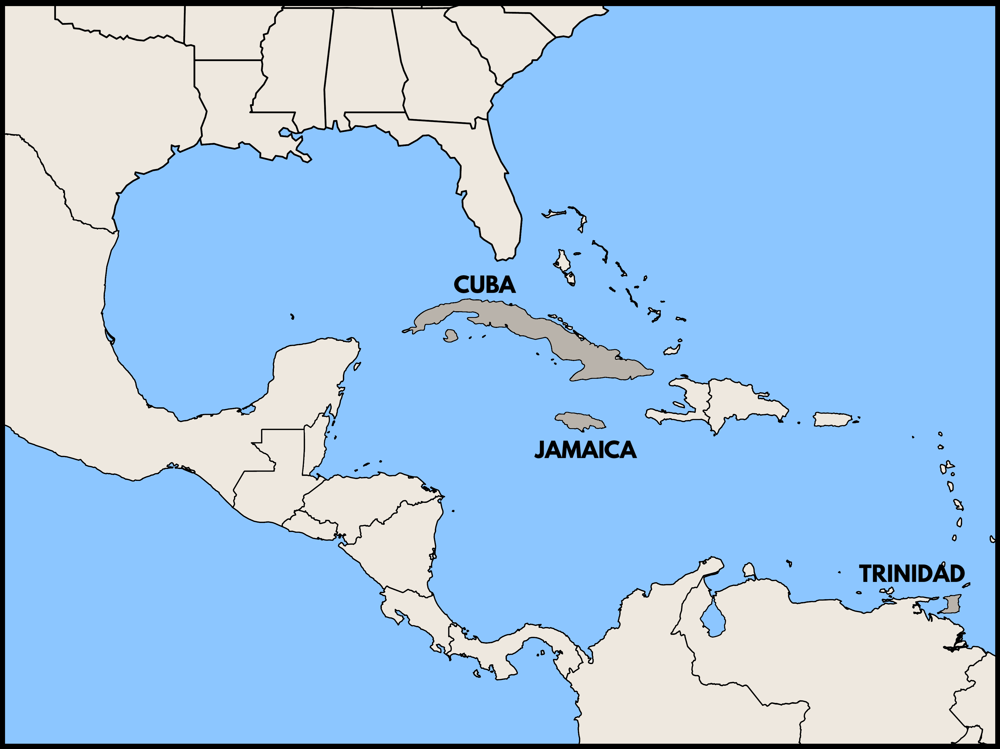

Q: Why wasn't Jamaican music recorded before the 1950s?
A: Record company scouts decided not to visit the island.
Given the worldwide popularity of ska, reggae, dancehall, and other genres from Jamaica, it may come as a surprise that the first commercially available record from the island was not released until 1950 or 1951. This record was a medley of mento songs by the vocalist Lord Fly. Yet mento, a popular dance genre that was a precursor of ska and reggae, had existed since the late nineteenth century, and Kingston, Jamaica had a thriving, cosmopolitan music scene throughout the 1910s and 1920s. So why didn't the record companies record any of it? To answer that question, we need to know something about the technicians who traveled the world recording music in the first decades of the industry.
From almost the beginning of the recording era, the big companies hoped to open new markets abroad by recording music that would appeal to local consumers. To do that, they brought foreign musicians to their recording studios in Europe and the United States. But they also sent their recording experts on international expeditions. Between 1903 and 1928, the Victor Talking Machine Company sent such "scouts" on more than 20 fieldtrips to Latin America, where they recorded nearly 7,000 musical performances, almost all of which were released as commercial records.

The scouts traveled by steamship, lugging equipment including portable recording machines, large wax masters, and recording horns of various sizes. Until record factories were built in Buenos Aires, Rio de Janeiro, and Mexico City in the 1920s, the masters were sent to Victor's factory in Camden, New Jersey, where records were pressed and then shipped back to be sold in the countries where they were recorded. Eventually, many of these records were also marketed and sold in the United States.

About ten men acted as recording scouts for Victor during this period, traveling the globe but focusing most of their efforts on Latin America and the Caribbean. All of these men were technicians based in Camden who lacked any expertise in the music of the region. Their itineraries were improvised, and their contacts in each locale often a question of happenstance. Yet their choices had an enormous impact on the music that was recorded.
Victor's efforts in Peru give a sense of the process. In 1912, Columbia records recorded the Peruvian duo Montes and Manrique and released 90 recordings in Lima to great success. With the market potential thus demonstrated, Victor sent scouts Frank Rambo and Charles Althouse to Lima in 1913. Needing to find musicians, their first stop was a music store, Casa Castellanos. Perhaps there, they met Rogelio Soto, a Peruvian businessman who had been recording local acts on cylinders since 1903. He put the Victor scouts in touch with musicians Miguel Almeneiro and Alejandro Ayarza, who in turn introduced them to many other performers. Using Almeneiro's house as an improptu studio, Rambo and Althouse made 202 recordings in three weeks. These recordings covered a broad stylistic range (including the two recordings on the right) but one informed more by chance than by any knowledge or plan.

Althouse returned to Lima in 1917 (this time with a new partner, George Cheney) as part of a massive, year-long expedition that would also take them to Argentina, Chile, Bolivia, and Ecuador. But after that, Victor's scouts did not return to Peru until 1928. For a decade, there were no new recordings of Peruvian musicians. The gap was filled by American music, music recorded in Argentina, and the records of American bandleader Nat Shilkret, whose dance band recorded "Peruvian" and "Spanish" songs for South American markets. Perhaps having established more permanent studios in Buenos Aires, Victor didn't see the need to fund difficult and expensive return trips to Lima.
The history of recording in Peru reveals the impact of the seemingly random decisions made by executives attempting to evaluate markets from afar and scouts struggling to make contacts on the ground. Nevertheless, the failure of Victor's recording scouts to stop in Jamaica still seems odd, especially since they visited another Caribbean island — Cuba — more than any other foreign destination.

Although we can't definitively solve the mystery, we can hazard a pretty good guess. The Trinidadian group, Lovey's Trinidad String Band, toured the United States in 1912 and was recorded by both Victor and Columbia in New York. When those records sold well, Victor sent Cheney and Althouse to Port of Spain to record more Trinidadian music. They made 83 recordings on the trip, including the two calypso records on the right, which were released in time for the 1915 carnival season.
In future years, musicians from Trinidad recorded frequently for Victor and other companies. It is likely that Victor's executives believed that these records were enough to satisfy the West Indian market, especially since Trinidadian bands sometimes recorded Jamaican tunes. In any case, Victor's experts likely could not tell the difference between Trinidadian calypso and Jamaican mento.

The contrasting fates of Trinidad and Jamaica in the earlier years of recording remind us that the powerful impact of the global recording industry could be quite capricious. Peruvians heard a lot of Argentine music and Jamaicans heard a lot of Trinidadian music, but not vice versa.
To learn more:
- Sergio Ospina Romero, "Recording Studios on Tour: Traveling Ventures at the Dawn of the Music Industry," in Roy and Moreda Rodríguez, eds., Phonographic Encounters: Mapping Transnational Cultures of Sound, 1890-1945 (Routledge, 2022).
- Jonathan Ward, Excavated Shellac: An Alternate History of the World's Music (mp3 collection plus liner notes).
Find even more on this topic in our bibliography.